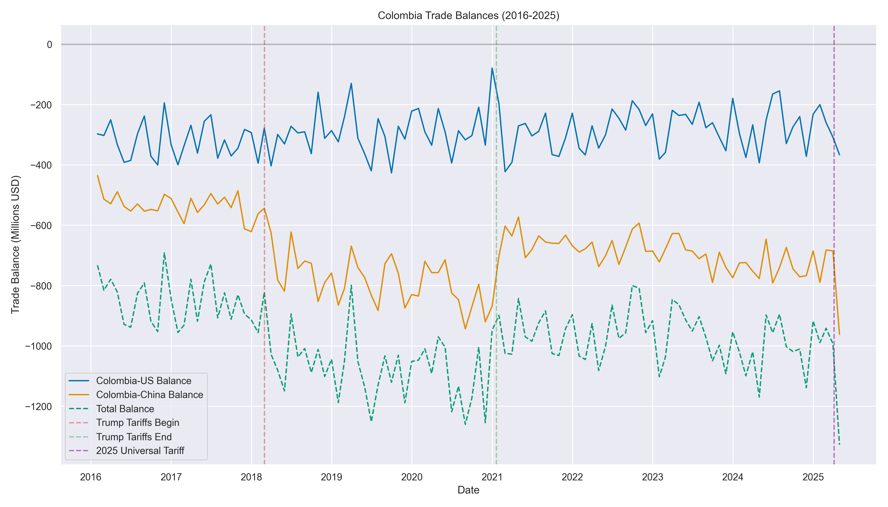
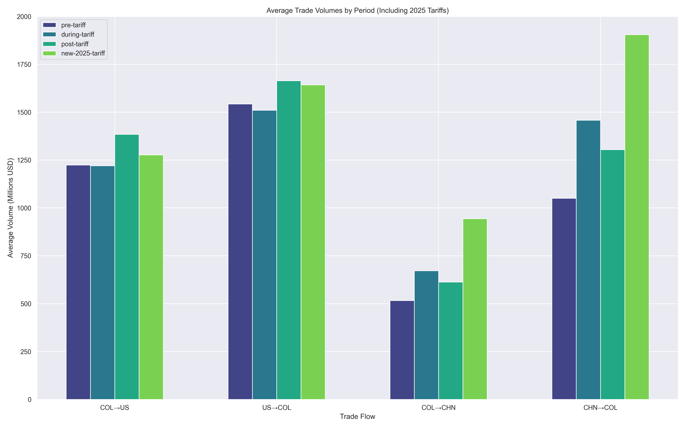
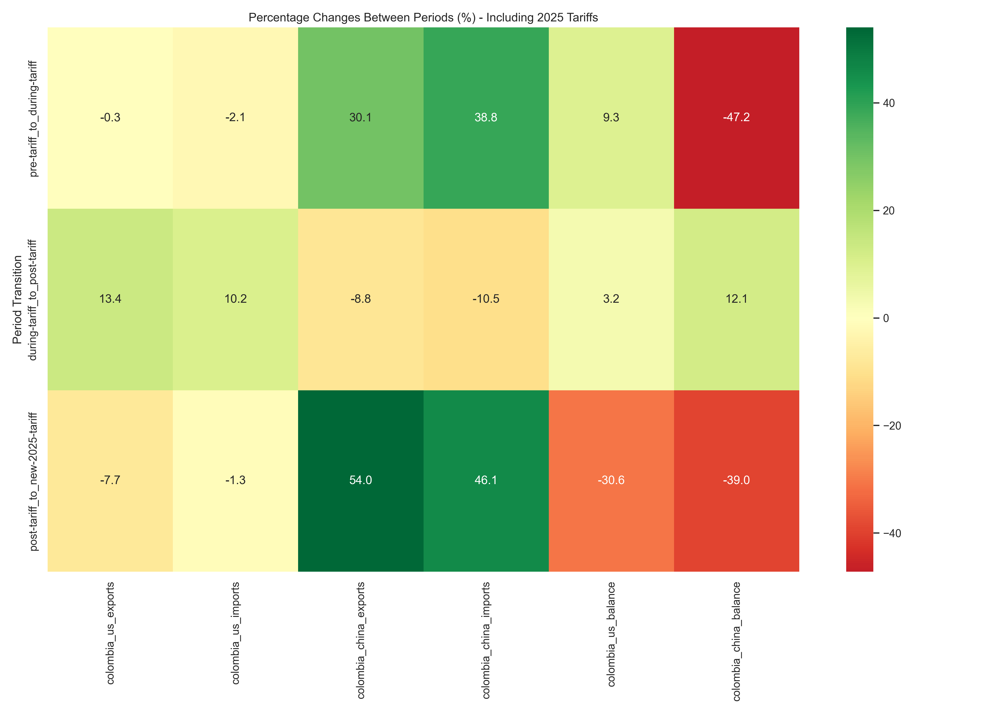
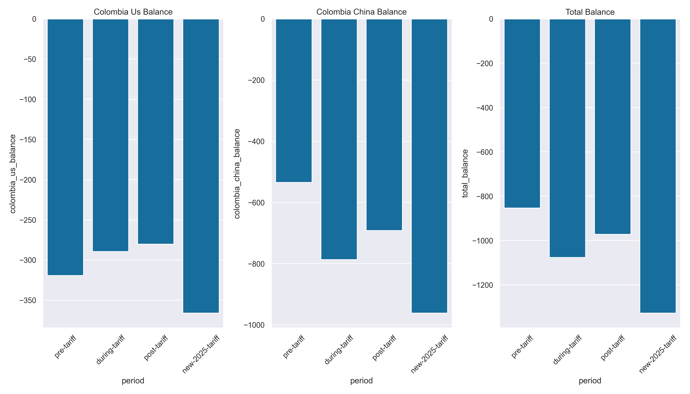
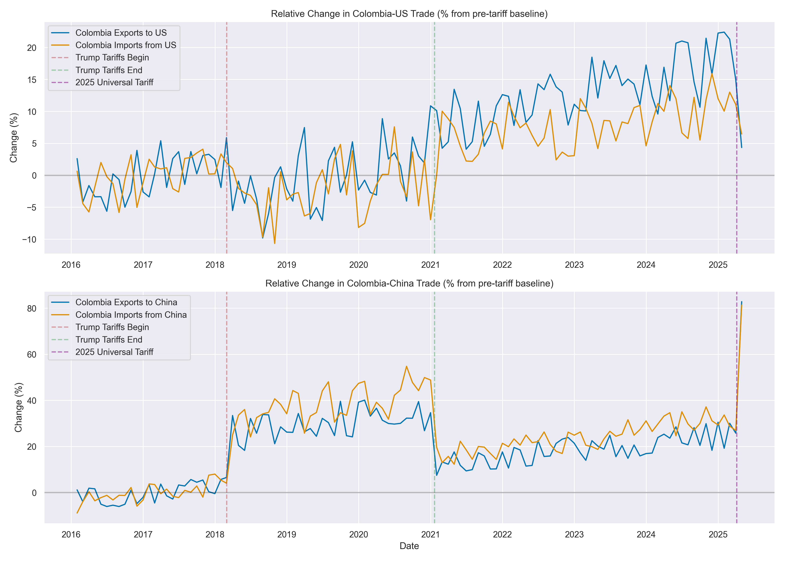

Colombia Trade Relations: Impact of Trump Administration and 2025 Universal Tariffs
This report analyzes trade patterns between Colombia and its major trading partners (USA and China) across multiple tariff periods, including the Trump administration tariffs (2018-2021) and the 2025 Universal U.S. Reciprocal Tariff.
Trade Volume Statistics
| Period | Colombia to US Exports | US to Colombia Imports | Colombia to China Exports | China to Colombia Imports |
|---|---|---|---|---|
| pre-tariff | 1223.47 | 1542.73 | 515.96 | 1050.28 |
| during-tariff | 1220.16 | 1509.59 | 671.47 | 1457.93 |
| post-tariff | 1384.01 | 1664.13 | 612.60 | 1304.17 |
| new-2025-tariff | 1276.76 | 1642.72 | 943.46 | 1904.79 |
Trade Balance Statistics
| Period | Colombia-US Balance | Colombia-China Balance | Total Balance |
|---|---|---|---|
| pre-tariff | -319.26 | -534.32 | -853.57 |
| during-tariff | -289.42 | -786.46 | -1075.88 |
| post-tariff | -280.12 | -691.57 | -971.69 |
| new-2025-tariff | -365.96 | -961.33 | -1327.29 |
Percentage Changes Between Periods
| Transition | Colombia to US Exports | US to Colombia Imports | Colombia to China Exports | China to Colombia Imports |
|---|---|---|---|---|
| pre-tariff_to_during-tariff | -0.27% | -2.15% | +30.14% | +38.81% |
| during-tariff_to_post-tariff | +13.43% | +10.24% | -8.77% | -10.55% |
| post-tariff_to_new-2025-tariff | -7.75% | -1.29% | +54.01% | +46.05% |
Visualizations
Trade Volume Over Time

Trade Balance Over Time
Trade Volume by Period
Trade Changes Between Periods
Trade Balance by Period
Relative Changes from Pre-Tariff Baseline
Key Findings
Trump Administration Tariffs (2018-2021)
- During the Trump tariff period, Colombia's exports to the US showed a -0.3% change.
- Imports from the US to Colombia changed by -2.1% during the Trump tariff period.
- Colombia's exports to China increased by 30.1% during the Trump tariff period, suggesting possible trade diversion.
- Imports from China to Colombia increased by 38.8% during the same period.
- After the Trump tariffs ended, Colombia-US trade showed signs of recovery.
2025 Universal U.S. Reciprocal Tariff
- When the 2025 Universal 10% Reciprocal Tariff was implemented, Colombia's exports to the US showed a -7.7% change.
- Imports from the US to Colombia changed by -1.3% after the 2025 tariff implementation.
- Colombia's exports to China changed by 54.0% during the 2025 tariff period.
- Imports from China to Colombia changed by 46.1% during the same period.
Conclusions
The analysis suggests that both the Trump administration tariffs and the 2025 Universal U.S. Reciprocal Tariff had measurable impacts on Colombia's trade patterns. There appears to be evidence of trade diversion between the US and China during both tariff periods, particularly in terms of Colombia's import sources.
The key difference between the Trump-era tariffs and the 2025 Universal Tariff is the broader scope of the latter, affecting all trading partners rather than focusing primarily on China. This universal approach appears to have had more significant effects on Colombia's overall trade patterns.
The temporary US-China agreement in May 2025 shows early signs of adjustments in trade flows, though the long-term impacts remain to be seen.
This analysis used actual data through May 2025 and would benefit from ongoing updates as the tariff situation continues to evolve.